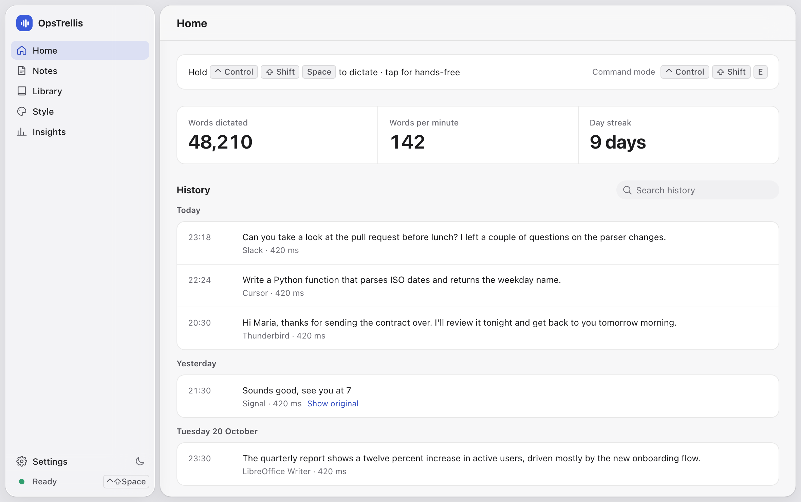

Hold a key.
Talk.
Clean text appears.
OpsTrellis is voice dictation for macOS and Linux. It works in every app, runs offline by default, and writes the way you would have typed it.
curl -fsSL https://raw.githubusercontent.com/mtr1920/opstrellis/main/install.sh | bash
Apple-silicon Macs on macOS 11+, and Linux x86_64 (Ubuntu 22.04+). Run it again to update. Prefer a package? Get the .dmg, .deb or AppImage.
It writes what you meant
Fillers go, voice commands work, and code stays code where you write code. Every line below is the app’s actual output, without any AI.
| You say | It types |
|---|---|
| “um so uh run cube control get pods” in a terminal | so run kubectl get pods |
| “open main dot rs and add dash dash watch” in a code editor | open main.rs and add --watch |
| “open main dot rs” in an email | Open main.rs. |
| “first point new line second point” | First point Second point. |
| “check the nest dev branch” with nest dev in your dictionary | Check the feature/nest_dev branch. |
Turn on AI polish, offline or with your own key, and it also fixes grammar and self-corrections like “2pm, actually 3pm”.
Every app, one shortcut
Hold CtrlShiftSpace, or just fn on a Mac. Tap once for hands-free. The text is pasted where your cursor is, and your clipboard is put back.
Tuned for prompts and terminals
Dictating to ChatGPT, Claude, Cursor or Claude Code keeps file names, paths and flags as code. About 300 developer terms are built in.
Command mode
Select text, hold the command key and say what to do: “make this more formal”, “reply saying Thursday works”, “summarize”.
A tone for each app
Casual in Slack, formal in email, structured in AI prompts. OpsTrellis picks the style from the app you are in.

Every dictation is kept in a searchable history, with the original transcript one click away. Keep it forever, 7 or 30 days, or turn it off.
Your voice stays on your computer
Out of the box, speech recognition runs locally with models like NVIDIA Parakeet, Whisper and Moonshine. Nothing is uploaded.
The microphone is open only while you record, and audio is never saved. History can be kept, limited to 7 or 30 days, or turned off.
Want the cloud? Bring your own key for OpenAI, Deepgram, AssemblyAI, Groq and others. Keys live in the Keychain or Secret Service.
Try it in a minute
curl -fsSL https://raw.githubusercontent.com/mtr1920/opstrellis/main/install.sh | bash
Free and open source under the MIT License. Settings, history and models are kept when you update.